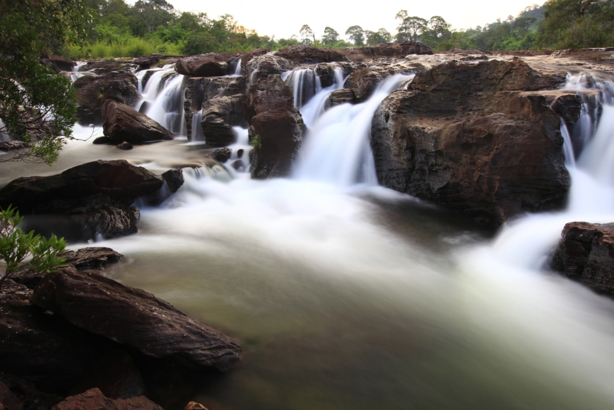

6 ที่เที่ยวจังหวัดปราจีนบุรี
ที่เราได้รวบรวมมาในวันนี้คัดมา โดยเน้นที่จุดที่มีมุมถ่ายรูปสวยๆแบบจัดเต็ม
ที่เราได้รวบรวมมาในวันนี้คัดมา โดยเน้นที่จุดที่มีมุมถ่ายรูปสวยๆแบบจัดเต็ม
เมื่อคุณก้าวเข้าสู่เส้นทางที่นำเส้นทางเข้าปราจีนบุรีวันนี้, คุณจะพบกับโลก
ของความงดงามทางธรรมชาติและวัฒนธรรมที่หลากหลายอย่างไม่ซ้ำซาก
ที่นี่ คุณจะได้พบกับทัศนียภาพที่มีความสวยงามที่น่าอัศจรรย์ ประสบการณ์ทางวัฒนธรรมที่น่าทึ่ง,
และการผจญภัยที่ไม่จำกัดขอบ.
ช่วงเวลาที่คุณเดินทางเข้าปราจีนบุรีวันนี้ คุณจะได้พบกับน้ำตกที่ทำให้ประทับใจที่สุด.
ที่นี่น้ำไหลตกลงมาเสมอกันอย่างสวยงาม,น้ำไหลตกลงมาเสมอ
กันอย่างสวยงาม และบรรยากาศอบอุ่นของหมู่บ้านโบราณที่เป็นมรดกที่มี
ความเป็นมาอันยาวนาน. คุณยังสามารถสานต่อวัฒนธรรมท้องถิ่นผ่านศิลปะและขนบธรรมเนียม
ประเพณีที่นี่ได้อีกด้วย. อย่าลืมลิ้มลองความอร่อยจากร้านอาหารท้องถิ่นที่นี่.
อย่ารอช้า! มาร่วมพบกับปราจีนบุรีที่คุณไม่เคยรู้จักมาก่อน และประทับใจทุกช่วงเวลาที่คุณอยู่ที่นี่. ขอบคุณที่ให้โอกาสในการตื่นตาตื่นใจ.